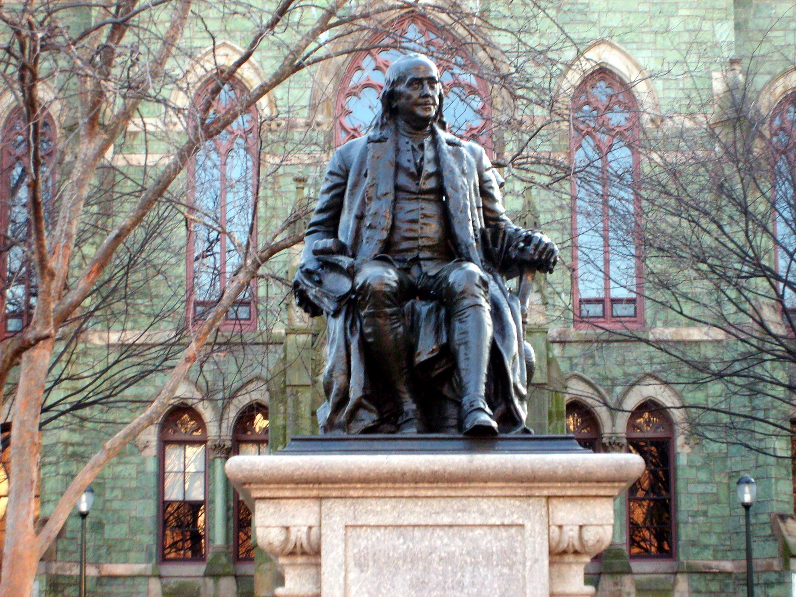
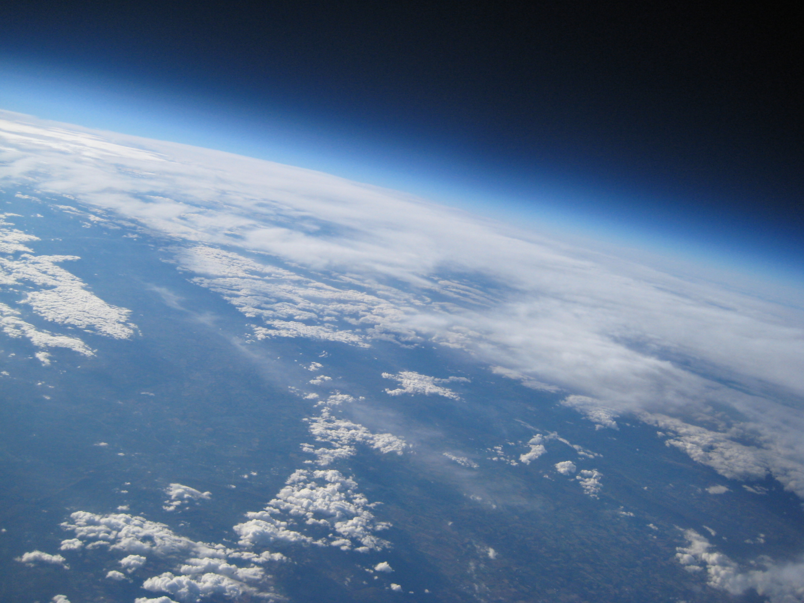
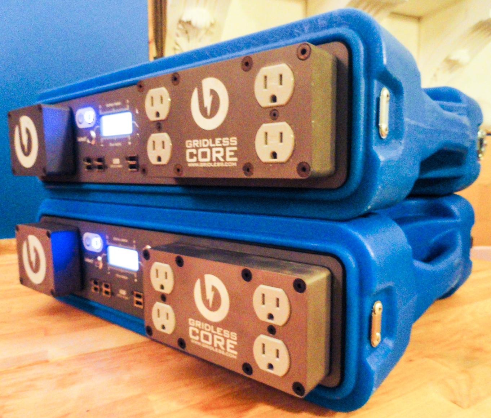
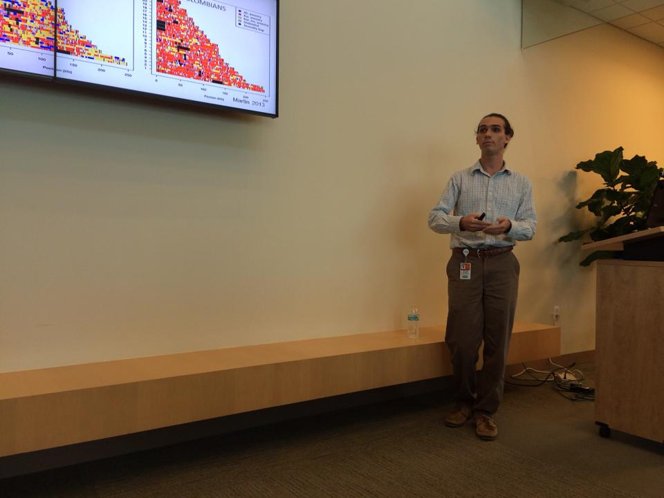

I did genetics research at the University of Miami
ACAGTCGGATCAGGTCTCAG
and sometimes I build stuff just for fun!

I am a part of the Jerome Fisher Program in Management and Technology, studying systems engineering at SEAS and business at the Wharton School.
I volunteer at Big Brothers Big Sisters and am on the Dean's List!

At Penn Aerospace's balloon project we build remote sensing payloads and send them to the edge of space.
The goal of the project is to create a community of learning and test new space technology
(and we took this picture)!

At Gridless I worked on microcontroller embedded programming, did market research,
and graphic design. I helped realize new projects for a great startup.

At the University of Miami I organized genome data in the largest alzeimer's genetic study to date.
I also ran GWAS to identify disease risk and studied race distinction's effect on genome studies.